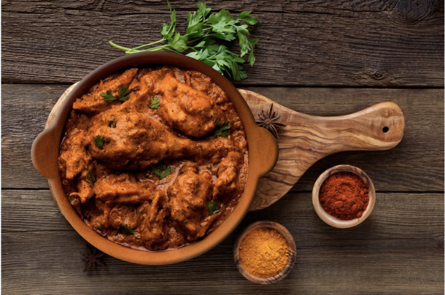

Ingredients
800g grams of Chicken breast
1/2 kg tomato
1/2 kg onion
2-3 garlic cloves
3 green chilis
ginger
Chicken Tikka Masala (any brand)
1/2 kg Yoghurt
Instructions
- Add the yoghurt to a bowl, add salt as per taste, 1/2 teaspoon turmeric, red chili powder as per taste and one tbsp chicken tikka masala. Mix well
- Cut chickenbreast into small pieces. Marinate in yoghurt.
- While chicken is marinating, prepare the gravy. Blend cut tomatoes, onion, chili and garlic.
- Add 2 tbsp of oil in a pan, add cumin and bay leaves to the hot oil.
- Add blended gravy to the pan. Sauté well.
- Add salt and pepper as per taste, 1/2 tsp of cumin and coriander powder. To this, add one tbsp Chicken Tikka Masala.
- Cook well, until the oil seperates out of from the gravy.
- Add marinated Chicken to oven at 200 degrees. bake the chicken for 20-25 minutes.
- Add the baked chicken to the gravy. garnish with coriander and ginger
- Serve hot with rice or naan

Click here to go back home.